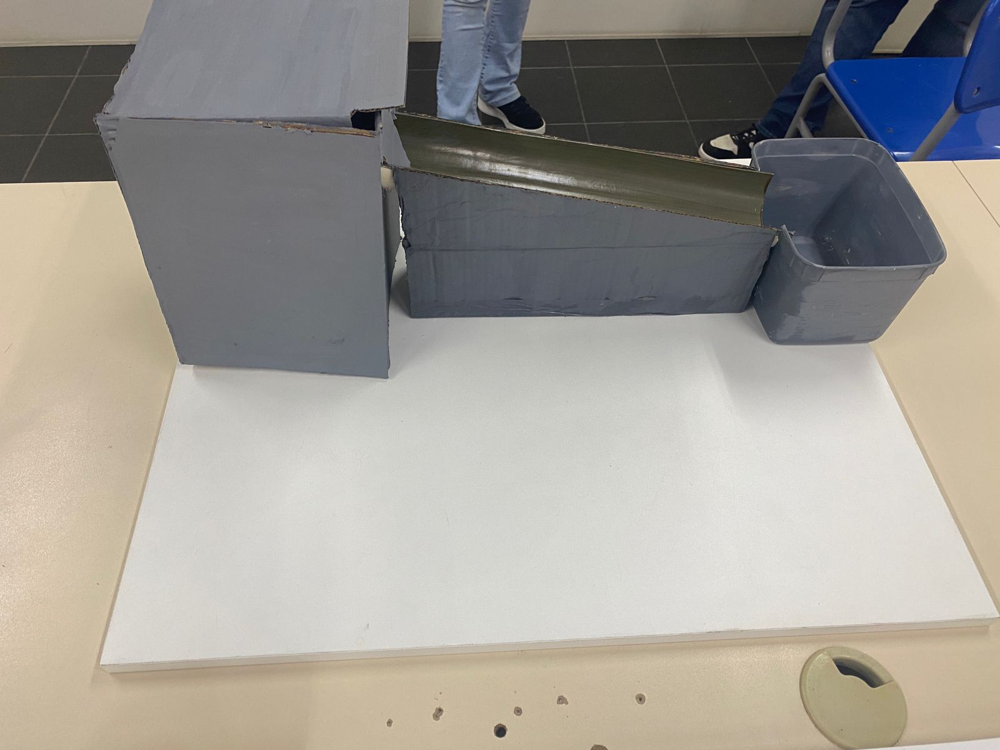

Hidreelétrica
Uma usina hidrelétrica é um conjunto de obras e equipamentos utilizados para produzir energia elétrica por meio do aproveitamento da água dos rios. Para que isso aconteça, a pressão da água gira a turbina para transformar a energia potencial gravitacional em energia cinética. A energia cinética é transformada pelo gerador em energia elétrica, que é o produto final a ser distribuído por meio de fios e cabos.
